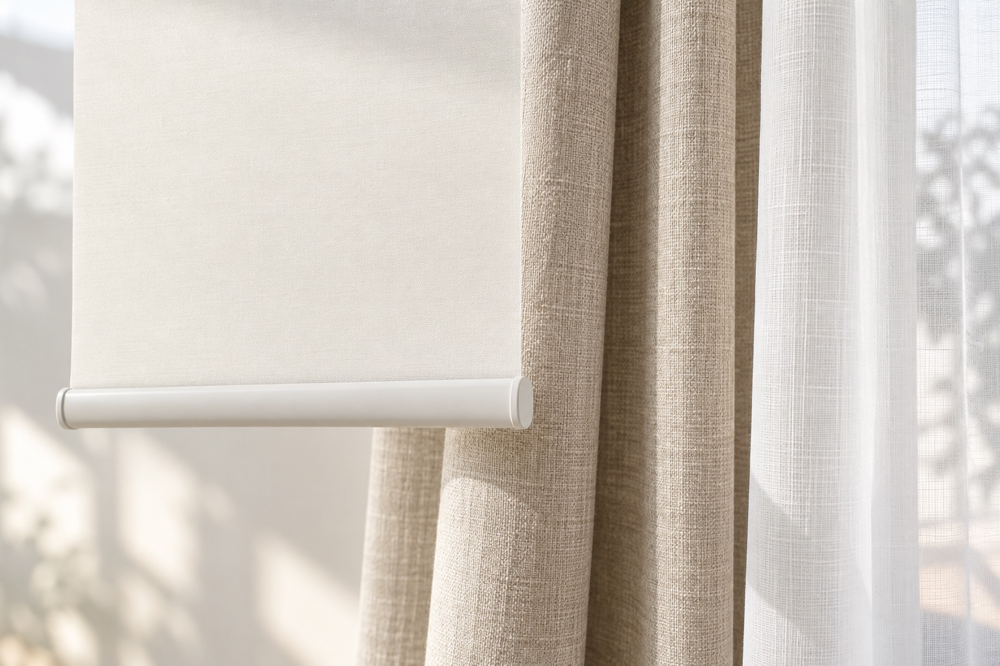

窓まわりを選ぶ
カーテン・ブラインド・ロールスクリーンを相談。

非公式デザイン見本 · 画像はAI生成イメージ↓提供内容を公式案内で確認し、希望することを整理してご相談ください。
カーテン・ブラインド・ロールスクリーンを相談。
開閉や出入りの仕方、間仕切りの用途に合わせた相談例を紹介。
店内の展示・サンプルを案内。一窓から相談できます。
詳しい内容は、各リンク先の公式ページでご確認ください。
窓の種類と気になっていること、開閉や出入りの頻度を整理しましょう。対応地域は新居浜市・四国中央市・西条市・今治市。日祝の来店は前日までの予約制です。最新の営業案内と採寸・見積の適用条件は店舗へ確認してください。
Roy Labによる相談準備の提案です。
この見本には連絡・申込機能はありません。